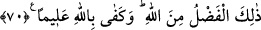

için harcayan kimselerdir.
Buradaki berâberlik derecesi beraber olmak değildir. Çünkü fazîletli olanla üstün
olanın eşit olması câiz değildir. Yine berâberlikten maksat, cennete girmekte mutlak
olarak müşterek olmaları da değildir. Aksine orada, aralarındaki mesâfe ne kadar uzak
olursa olsun her birinin diğerini görebilmesi, dilediğinde ziyâret edebilmesidir.
“Onlar ne güzel arkadaştır!” Burada bir hayret ifâdesi vardır. Yâni, peygamberlerle
onlardan sonra gelenler ne güzel arkadaştır.
Refîk, arkadaş demektir. Sosyal münâsebetlerde söz ve davranış olarak yumuşak
huyluluk ve letâfet mânâsındaki rıfk kökünden gelmektedir.
70- Bu lütuf Allah’tandır. Bilen olarak Allah yeter.
“Bu lütuf”, itâat edenlere verilecek büyük sevap ve hidâyetin ziyâdeleştirilmesi ile
kendilerine nîmet verilenlerle arkadaş kılma “Allah’tandır”, başkasından değildir.
Kendisine itâat edenin mükâfâtını, bu lütfun mikdarını ve buna kimin layık olduğunu
“bilen olarak Allah yeter.”
Bu âyet, bütün mükellefler için umûmîdir. Çünkü sebeb-i nüzûlün husûsî olması,
lafzın umûmî olmasını engellemez. Dolayısıyla Allah’a ve peygambere itâat eden
herkes, Allah katındaki şerefli derece ve mertebeleri kazanmış olur.
Sâlihlerden birinin şöyle dediği rivâyet edilmiştir: Bir gece beni hafif bir uyku tuttu
ve uyudum. Rüyamda sanki kıyamet kopmuş, insanlar hesâba çekiliyorlar, bazı gruplar
cennete, bir topluluk cehenneme götürülüyor. Ben de cennete gelip şöyle sesleniyorum:
“Ey cennetlikler, Allah’ın râzı olduğu bu yerde, cennetlerde kalmayı ne ile elde ettiniz?”
Cennetlikler bana: “Rahman’a itâat ederek ve şeytana karşı çıkarak” diye cevap
veriyorlar. Sonra cehennemin kapısına gelip: “Cehenneme nasıl düştünüz?” diye
sesleniyorum. Oradakiler bana şöyle cevap veriyorlar: “Şeytana itâat ederek ve
Rahman’a karşı çıkarak.”
Bu ar ve ayıptan başımı nasıl yukarı kaldırayım,
Çünkü nefis ve şeytanla sulhta, Cenâb-ı Hak’la savaştayım
Dost sana nadir nazar ve iltifat eder
Çünkü yüzün hep düşmana dönüktür
Rasûlullah (s.a.v.) şöyle buyurmuştur: “Yüz çevirenler dışında ümmetimin tamâmı
cennete girecektir.” “Cennete girmeyi kim istemez ki?” denilince Efendimiz: “Bana
itâat edenler cennete girer, bana karşı gelenler yüz çevirmiş olur.”[70] buyurdu.
Şu halde kişinin Allah Rasûlü (s.a.v)’e ve evliyâullaha tâbî olması lâzımdır. Çünkü